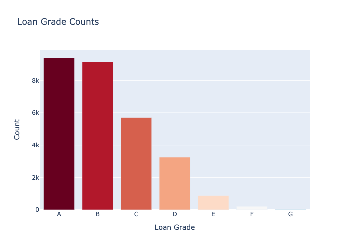
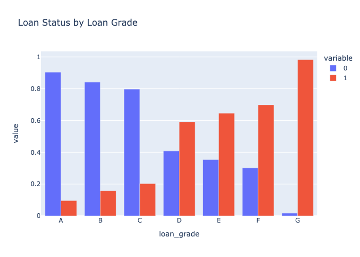

Loan Grade Counts
This bar chart highlights the distribution of loans across different grades (A-G). Grades A and B dominate, suggesting better financial risk profiles.
Correlation Heatmap

The heatmap illustrates the relationships between key variables like income, loan amount, and default loan status. High correlation is observed between credit history length and age.
Interest Rate vs Income

This scatter plot shows the relationship between loan interest rate and borrower income, segmented by loan default status.
Loan Status by Loan Grade
Default rates are higher for lower grades (D-G). Higher-grade loans (A-B) generally show lower default risks.
Interest Rate Boxplot by Loan Grade

Boxplots demonstrate that lower-grade loans (i.e. F and G) have higher interest rates, with visible differences by default status.